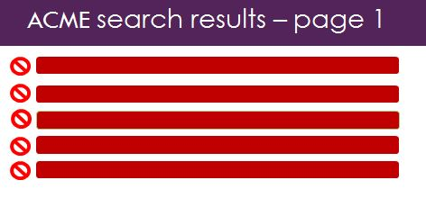

<div id="container-instructions">

    <h1>Instructions (6/7)</h1>
     Get familiar with the ACME search engine by clicking on Search button and following the instructions.
    <hr>

    <div class="instructions well">

        <p>
           
        </p>

        <p>

		

		<div id="instr3_headerdiv" align="center">
			<svg width="750" height="220" id="instr3_headersvg"></svg>
		</div>
		
		<div align="center">
			<button type="button"  id="instr3_button1" onclick="instr3_mult_func();"  >Search</button>
		</div>

		<div id="instr3_wrapper" align="center">

		

	             <div align="center">
		      	  
		      </div>

                      <div id="instr3_radio" align="center">
				<input type="radio" id="instr3_radio1"  name="decide" value="success"  onclick="instr3_showinst('This was not a right answer, please try again');"  >Relevant results appeared on 1st page
				<input type="radio" id="instr3_radio2" name="decide" value="failure" onclick="instr3_enable_next();"> Relevant results  did not appear on 1st page
		      </div>
			<BR>

			<div id="instr3_clbut"></div>
		      


			<textarea  rows="10" style="width: 600px;"  id="subdomaintwo" resize: none; disabled/>

			<div id="instr3_question11" width="350"> </div>

		      

		       <div id="instr3_wrapper"> 
			  <span class="range-before">Totally Distrust</span>
			  <input type="range" id="instr3_sliderBar" min="0" max="100" step="1" value="50" onChange="instr3_mult_func_slider(this.value);"/>
			  <span class="range-after">Totally Trust</span>
		        </div>
		     
	              <div id="instr3_puttext2"></div>

		

		</div>
		

		<BR><BR>
			
		 

                
        </p>


        <script type="text/javascript">
        //console.log(psiTurk.getInstructionIndicator())
        </script>

    </div>

    <hr>

    <div class="instructionsnav">
        <div class="row">
            <div class="col-xs-2">
                <button type="button" id="next" value="next" class="btn btn-primary btn-lg previous">
                <span class="glyphicon glyphicon-arrow-left"></span> Previous
                </button>
            </div>
            <div class="col-xs-8">
            </div>
            <div class="col-xs-2">
                <button type="button" id="next2" value="next" class="btn btn-primary btn-lg continue">
                Next <span class="glyphicon glyphicon-arrow-right"></span>
                </button>
            </div>
        </div>
    </div>

</div>


		<script>

	

		document.getElementById("next2").disabled = true; 

		document.getElementById("instr3_wrapper").style.visibility="hidden";
		document.getElementById("instr2_iii2").style.visibility="hidden";
		document.getElementById("instr3_radio").style.visibility="hidden";
		document.getElementById("instr3_sliderBar").style.visibility="hidden";
		document.getElementById("instr3_sliderBar").disabled = true;
		
		document.getElementById("subdomaintwo").style.visibility="hidden";


		var instr3_showinst = function(instr3_si) {
			
			document.getElementById("subdomaintwo").value = instr3_si;
		};
		
		//show the main figure
			d3.select("#instr3_headersvg")
				.append("image")
				.attr("id","instr3_hdr_img")
				.attr("x", 0)
				.attr("y", 0)
				.attr("width", 750)
				.attr("height", 220)
				.attr("xlink:href", "../../static/images/s2.jpg");
			

		

		var instr3_enable_next = function() { 
			
			
			document.getElementById("instr3_radio1").disabled = true; 
			document.getElementById("instr3_radio2").disabled = true; 

			document.getElementById("instr3_wrapper").style.visibility="visible";
			document.getElementById("instr3_sliderBar").style.visibility="visible";
			document.getElementById("instr3_sliderBar").disabled = false; 
			

			d3.select("#instr3_question11")
			  .append("div")
			  .attr("id","instr3_texttt_q11")
			  .html ('To what extent do you have the confidence that  ACME  Search Engine  <br>   <U> will deliver <B> at least one </B> useful result  <br>  on the first page </U> <br> during your next search?');

			//Svinei to keimeno apo pi8ani lan8asmenio apantisi kai dinei to swsto
			
	document.getElementById("subdomaintwo").value ="Great, this was the right answer. You may now continue: " + "\n" + "Please answer the following question by sliding the value bar to your selected number.";

		
		};


	//show the two other figures
	var instr3_mult_func = function() {

                
		
		
		
		document.getElementById("instr3_button1").disabled = true; 
	
		document.getElementById("instr2_iii2").style.visibility="visible";
		document.getElementById("instr3_radio").style.visibility="visible";
		document.getElementById("subdomaintwo").style.visibility="visible";

		d3.select("#instr3_clbut")
		  	.append("div")
		 	 .attr("id","instr2tt_clbut")
		  	.html("Below you may see the instractions, based on your actions");
		
		
	};

	var instr3_mult_func_slider = function(vts) {
		document.getElementById("next2").disabled = false; 

		instr3_showSliderValue2(document.getElementById("instr3_sliderBar").value);
		document.getElementById("instr3_sliderBar").disabled = true; 


		//success and trust increase
		if (document.getElementById("instr3_sliderBar").value >=50) {
			document.getElementById("subdomaintwo").value += "\nYour response indicates a trust increase after a failure, which is interesting.\n\n You may now continue in the next page of instructions:\n Please click the 'Next' button below.";

		}

		if (document.getElementById("instr3_sliderBar").value < 50) {
			document.getElementById("subdomaintwo").value += "\nYour response indicates a trust decrease after a failure, which is not surprising. \n\n You may now continue in the next page of instructions:\n Please click the 'Next' button below.";
		}
	};

	var instr3_showSliderValue2 = function(instr3_text22) {
		
		d3.select("#instr3_puttext2")
		  .append("div")
		  .attr("id","instr3_texttt2")
		  .text(instr3_text22);
	};


	   </script>
